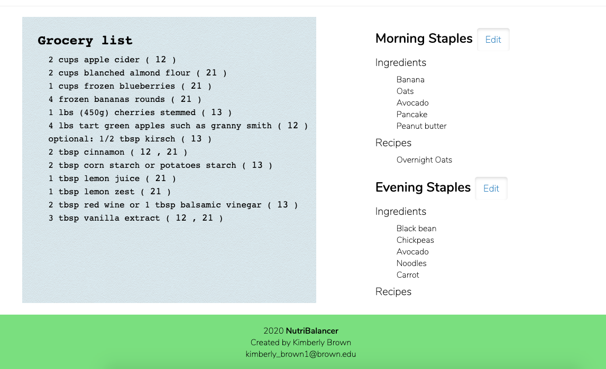
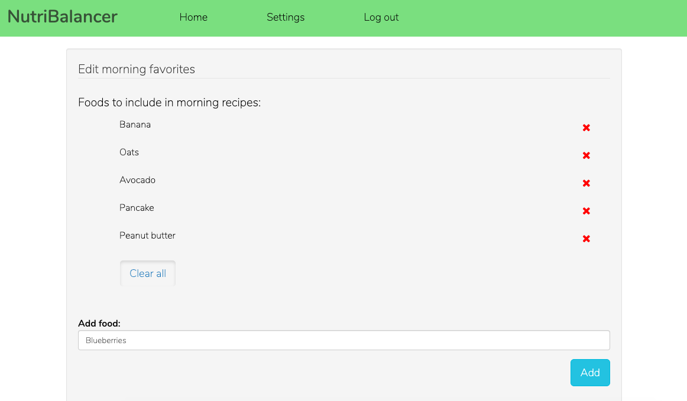
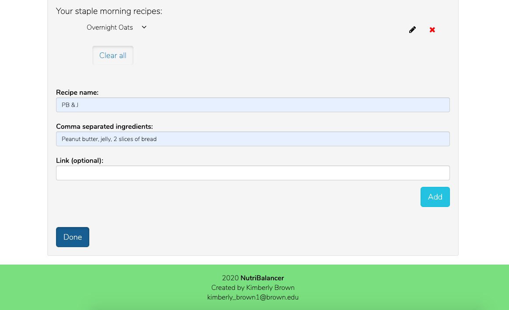
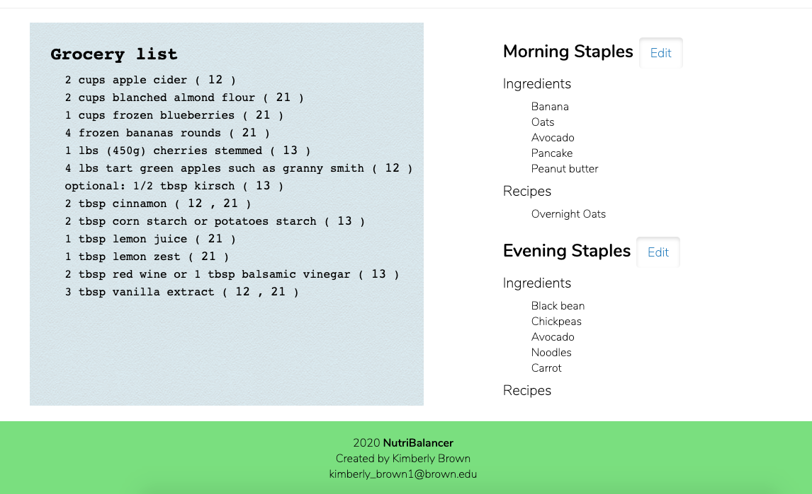
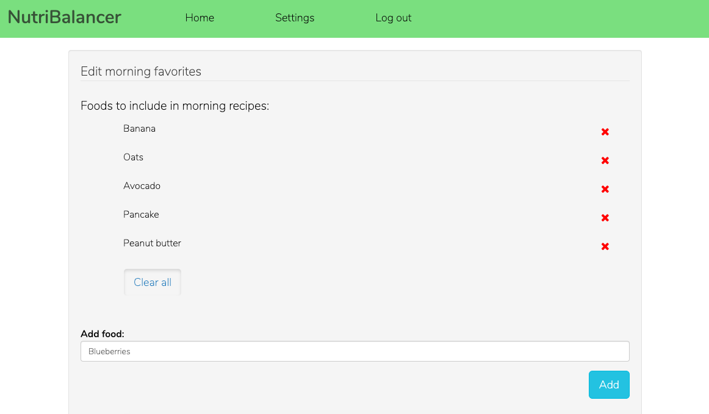
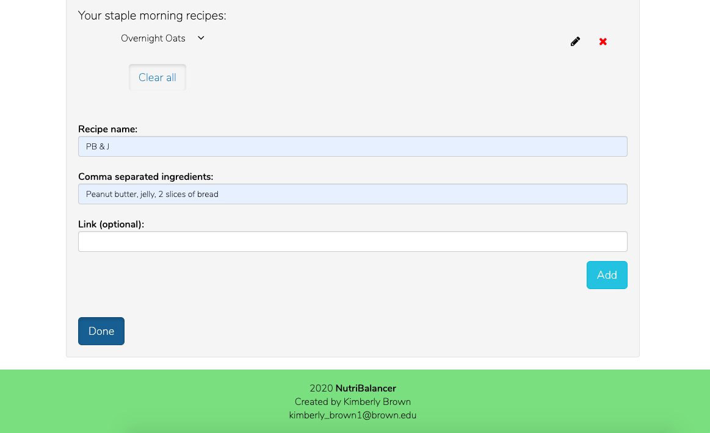

Creating NutriBalancer on Laravel (PHP)
The Task
After going off meal plan, I realized just how overwhelmed I was at the task of feeding myself a varied diet. I only knew a few recipes and felt like drawing up a grocery list and deciding what to feed myself three times a day, every day was taking up time and energy I wanted to spend on other things.
Since learning Symfony in my Web Technologies class, I felt confident getting started on a Laravel web app that could generate a week-long meal plan, leveraging the Edamam Nutrition API.
The app stores user information locally (in MySQL), and allows each user to save their meal plan, favorite foods, and staple recipes. It also generates a grocery list for them out of all the recipes in their meal plan and allows them to suppress recipes for certain meals and refresh recipes to see something different.
Takeaways
I have gained a better understanding of full-stack development through this project and intend to keep adding new functionality to it.
 




